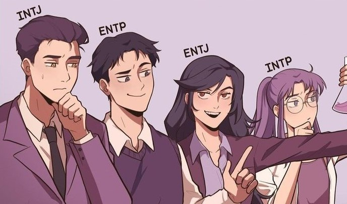

NT型
NT型は、MBTIの16の性格タイプの中で、直感的(Intuitive)かつ思考的(Thinking)な性格を持つ4つのタイプ (INTJ、INTP、ENTJ、ENTP)を指します。以下は、NT型の基本的な特徴です。
・論理的思考：NT型の人々は、情報を論理的に分析し、客観的な判断を下すのが得意です。 彼らは事実やデータに基づいて意見や判断を形成します。
・独立心：NT型は自分の考えや信念に非常に自信を持っており、他人の意見に流されることなく、 自分の考えを持つことができます。
・戦略的思考：未来を予測し、長期的な目標や計画を立てるのが得意です。彼らは大局的な視点を持ち、 細部に囚われることなく、全体像を見ることができます。
・好奇心：新しい知識や技術、アイディアに対して非常に興味を持ち、学び続ける姿勢を持っています。
